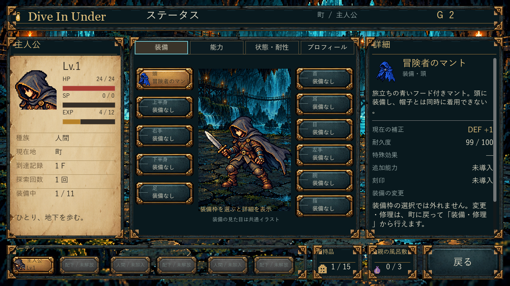
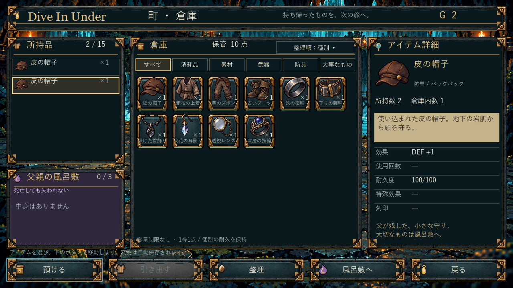

Dive In Under — 0.5.4
通常EXEに反映済みです。新規開始では青い冒険者のマントを頭に装備。既存セーブの装備は保持します。起動中の旧版は閉じ、01から再起動してください。
石・真鍮・羊皮紙の装飾と既存10種類の装備画像を取り込みました。文字・クリック・実数値はゲーム側で処理。最終ビルドと描画はクラウドで確認し、このPCではファイル取得・照合・配置を行いました。

通常新規開始→1F解決→町。青マントは頭の11枠中1枠を使用し、選択で詳細を確認できます。
確認用アイテム構成で10種類の表示を比較。ユーザーの所持品は変更していません。起動先・SHA / CI成功 / 旧0.5.3の記録。